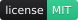
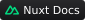
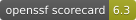

Nuxt
  
Nuxt is a free and open-source framework with an intuitive and extendable way to create type-safe, performant and production-grade full-stack web applications and websites with Vue.js.
It provides a number of features that make it easy to build fast, SEO-friendly, and scalable web applications, including:
- Server-side rendering, static site generation, hybrid rendering and edge-side rendering
- Automatic routing with code-splitting and pre-fetching
- Data fetching and state management
- Search engine optimization and defining meta tags
- Auto imports of components, composables and utils
- TypeScript with zero configuration
- Go full-stack with our server/ directory
- Extensible with 300+ modules
- Deployment to a variety of hosting platforms
- …and much more 🚀
Table of Contents
- 🚀 Getting Started
- 💻 Vue Development
- 📖 Documentation
- 🧩 Modules
- ❤️ Contribute
- 🏠 Local Development
- 🛟 Professional Support
- 🔗 Follow Us
- ⚖️ License
🚀 Getting Started
Use the following command to create a new starter project. This will create a starter project with all the necessary files and dependencies:
npm create nuxt@latest <my-project>
[!TIP] Discover also nuxt.new: Open a Nuxt starter on CodeSandbox, StackBlitz or locally to get up and running in a few seconds.
💻 Vue Development
Simple, intuitive and powerful, Nuxt lets you write Vue components in a way that makes sense. Every repetitive task is automated, so you can focus on writing your full-stack Vue application with confidence.
Example of an app.vue:
<script setup lang="ts">
useSeoMeta({
title: 'Meet Nuxt',
description: 'The Intuitive Vue Framework.',
})
</script>
<template>
<div id="app">
<AppHeader />
<NuxtPage />
<AppFooter />
</div>
</template>
<style scoped>
#app {
background-color: #020420;
color: #00DC82;
}
</style>
📖 Documentation
We highly recommend you take a look at the Nuxt documentation to level up. It’s a great resource for learning more about the framework. It covers everything from getting started to advanced topics.
🧩 Modules
Discover our list of modules to supercharge your Nuxt project, created by the Nuxt team and community.
❤️ Contribute
We invite you to contribute and help improve Nuxt 💚
Here are a few ways you can get involved:
- Reporting Bugs: If you come across any bugs or issues, please check out the reporting bugs guide to learn how to submit a bug report.
- Suggestions: Have ideas to enhance Nuxt? We’d love to hear them! Check out the contribution guide to share your suggestions.
- Questions: If you have questions or need assistance, the getting help guide provides resources to help you out.
🏠 Local Development
Follow the docs to Set Up Your Local Development Environment to contribute to the framework and documentation.
🛟 Professional Support
- Technical audit & consulting: Nuxt Experts
- Custom development & more: Nuxt Agencies Partners
🔗 Follow Us